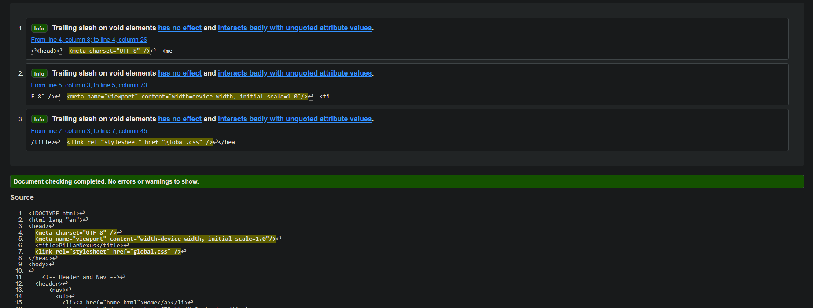
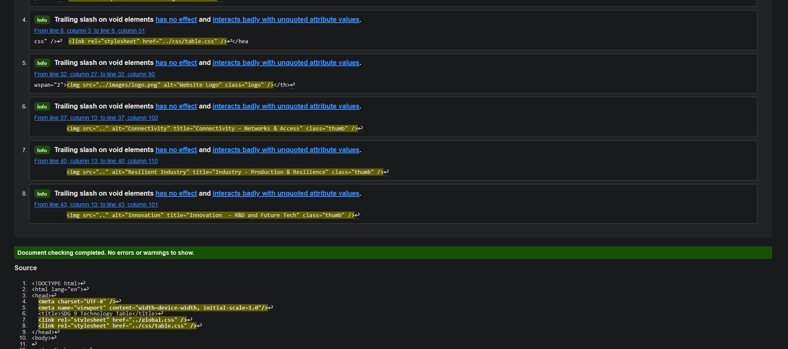
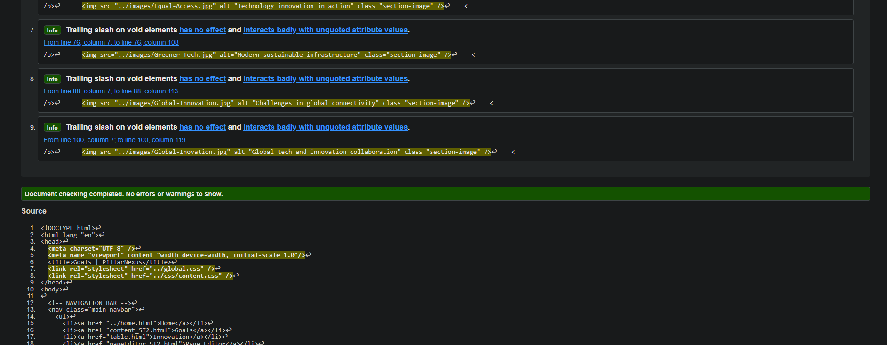
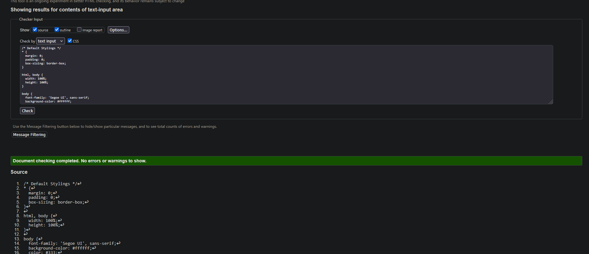

Home Page Validation (home.html)
This page passed HTML validation with no errors. Minor warnings related to meta description were present but acceptable.
Table Page Validation (table.html)
The table page passed validation successfully with proper structure, use of colspan/rowspan, and accessible table markup.
Content Page Validation (content.html)
Validation completed with no errors. This page included internal navigation, anchor links, and multiple semantic sections.
CSS File Validation
The global CSS file was validated with no critical issues. Vendor prefixes and custom properties were used correctly.
Reflection
The validation process was a useful way to ensure that my code followed best practices and was free of major errors. I encountered minor issues like missing meta tags or ARIA labels, which were corrected to improve accessibility and structure. The use of W3C tools helped me confidently structure clean, accessible HTML and CSS for all of my pages.